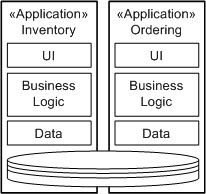

|
One of the stated advantages of Service-Oriented Architecture is the ability to get away from "silo" thinking within
IT, the development of applications as islands of functionality. We tend to think of applications today as a vertical
integration of a set of components built for this one purpose. It is often the case that development projects are set
up around the development of, or maintenance of, an application and in some extreme cases development teams are solely
responsible for a single application. The following picture represents a common business application structure, showing
that really the only reuse between applications is often that they share a common database.

Whereas the Service-Oriented approach would lead us to a more horizontal view of applications as an integration of
services; so in fact all of our services are peers in a portfolio of capabilities from which applications, which can
now be thought of as those parts of the IT solutions interacting with users, can be developed. The following
demonstrates how the Ordering application can be developed as a set of user-facing portlets for integration into a
portal server, and that the business logic is provided by a set of services which in turn utilize a set of
infrastructure services.

Services provide independently deployed components that are provided at a granularity that typically allows them to be
entirely self-contained, this leads to services that manage and protect their own data stores rather than sharing
database storage. This seems to be in contrast to moves by some companies over the years to introduce common data
stores, or at least common data models that all applications share. On the contrary a service-oriented architecture
tends to lead designers into developing not common data storage models but common message models to ease the
integration of services through middleware technologies.
As we mentioned before both projects and development teams have a limited scope and also a limited visibility into the
wider capabilities, requirements and goals of the IT services and more importantly the business the services support.
It is therefore critical that the move toward Service-Oriented Solutions and the horizontal view of integrated
solutions that the architects on the IT side be able to visualize the portfolio of services supporting the business
solutions required for the business itself to operate. One advantage to modeling services is that an abstract model is
able to elide certain details and therefore present the broad view of the service portfolio in a scalable manner, i.e.
in the presence of many services the model is able to present views of the portfolio supporting decision making for the
Software Architect and Designer.
Obviously as organizations transition to Service-Oriented Architecture there will be a growth in services and so the
portfolio will not start as a large model, but it is possible to capture the state of the transition in terms of
available as well as planned services. Service Partitioning is also vital in organizing the model and categorizing
services as the portfolio is developed.
It is important to be able to categorize the services in the portfolio in a number of ways, but most commonly we use
terminology that describes the service's purpose, ownership or organization. To support this categorization or
classification each Service Partition has a Classification property that can be used to denote the classification kind,
the name of the partition becomes a value in that classification scheme.
So, for example the following diagram, or some variant, has been developed by a number of companies to help visualize
the "types" of services in the portfolio.Note that this categorization, while common, is simply one possible way to
segment the service portfolio. In this example each partition is named with its classification property set to "zone".
-
User Interaction Services are used to describe how the user interacts with the application; for example a
service may need to assign work to a human user, there need to be services that know how to notify the user of this
work and then notify the originating service of the work completion.
-
Application-Specific Services are services that are developed as a part of a development activity that have
been deemed as not appropriate for reuse and so are not considered a part of the portfolio. It is also possible
that, as services are composable entities, that a service may be part of the portfolio yet nested services it uses
are not published.
-
Process Integration Services are services, usually provided by commercial middleware, that provide the
choreography of services so that processes can be enacted in the middleware and utilize the services in the
portfolio to implement a process.
-
Information Integration Services are again commercial middleware services that provide services for the
mediation of data formats and message content between services; for example a customer message can be generated by
the service which is an aggregation of data retrieved from other services in the portfolio.
-
Business Services are those services specific to the business, developed for the business and providing
direct support to the applications developed to support the business. Examples might be CustomerMgmt, Inventory,
HR, etc.
-
Infrastructure Services are services that provide common IT functions required not only by the Business
Services but by the integration services as well. Examples might be Messaging, Directory, Authentication, Legacy
access, etc.
For more examples of classification kinds see the concept Service Partitioning.
So, apart from a model of the service portfolio it is important that Designers and Developers have access to service
specifications in a detailed fashion at design and implementation. It is also possible for multiple services to
implement the same specification and so a registry allowing queries of the form "all services implementing the
IOrdering specification" allows for developers to compose solutions from existing services, and integration developers
to identify which services to use to satisfy business or technical requirements.
Service repositories are also able to use the classification values introduced using the service partitions above to
pre-populate the values as metadata describing the services held by the repository.
For example, a solution may call for a shipping service, the registry may identify 3 services that provide shipping,
two provide secure message exchange but one only does so over Java Message Service (JMS) while the other provides SOAP
over HTTP. Business requirements only specify that customer information be kept private and so a secure message
exchange is required, IT standards recommend that JMS not be used to a remote service and so we have narrowed down our
choice.
The following presents some of the technical implementations available currently for service registries.
-
UDDI; The web services standard registry, this has wide adoption and was intended to support both
development and integration time queries. However, the level of customization required to keep track of all of the
data associated with a service specification has certainly led to some questions about whether UDDI as it stands
today is enough to support the enterprise service portfolio we discuss here.
-
RAS Repository; The Reusable Asset Specification was intended to support a customizable metadata description
for reusable assets, and does have a metadata profile for web services. While it was not the intent for RAS to
provide a service portfolio it would be possible to do so for development time metadata although it is not
currently appropriate for integration time queries.
-
Custom; Many organizations, faced with these choices, have chosen to implement custom service repositories,
managing a set of metadata or design documents for services at design time and associated web service artifacts for
implementation time. In most cases a separate UDDI repository is then used when deploying production services for
integration time queries.
|